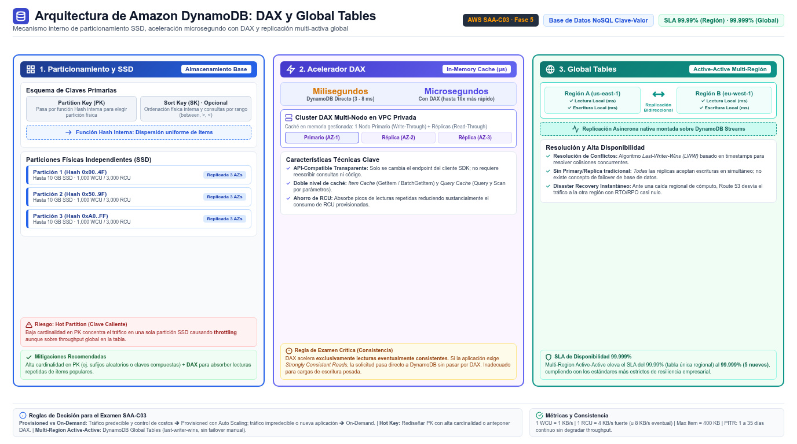

DynamoDB Amazon DynamoDB
La base de datos serverless key-value del examen: single-digit milliseconds a cualquier escala, tablas que crecen solas y decisiones de capacidad que distinguen provisioned de on-demand.
Amazon DynamoDB es una base de datos NoSQL serverless, totalmente gestionada y distribuida, que la documentación oficial define por su rendimiento: single-digit millisecond performance at any scale, ya sirvas a 10 usuarios o a 100 millones. No hay servidores que aprovisionar ni parchear, no hay ventanas de mantenimiento ni versiones que gestionar: creas la tabla y está lista para producción. Los casos internos de Amazon — Prime Day, Alexa, los fulfillment centers — mueven billones de requests, y la documentación menciona cientos de clientes por encima de 500,000 requests por segundo y tablas de más de 200 TB. Por defecto replica los datos en tres Availability Zones con un SLA de disponibilidad del 99.99%.
El modelo de datos es key-value and document: tablas de items con atributos, donde la clave primaria puede ser solo una partition key o la combinación partition key + sort key. No hay JOIN: la guía oficial recomienda denormalizar el modelo para responder con una sola consulta, aunque DynamoDB sí ofrece transacciones ACID entre items y tablas. Para consultar por atributos que no forman la clave existen los índices secundarios globales (GSI) y locales (LSI). Las lecturas pueden ser eventualmente consistentes (por defecto) o strongly consistent si lo pides por operación.

Capacidad: provisioned con RCU/WCU frente a on-demand
Cada tabla funciona en uno de dos capacity modes que también definen cómo te cobran. En provisioned mode especificas las read capacity units (RCU) y write capacity units (WCU) que necesitas: cada WCU sostiene una escritura de hasta 1 KB por segundo y cada RCU una lectura fuertemente consistente de hasta 4 KB por segundo — las lecturas eventualmente consistentes cuestan la mitad. Se factura la capacidad reservada por hora, la uses o no, y es el modo para workloads estables y predecibles donde la previsibilidad de costo importa; puedes combinarlo con Auto Scaling de DynamoDB para ajustar las unidades dentro de límites. DynamoDB también acumula burst capacity para picos cortos y cuenta con adaptive capacity que redirige capacidad de particiones frías hacia las calientes.
En on-demand mode no planificas nada: pagas exactamente por cada request de lectura o escritura realizado. La documentación lo señala como el modo por defecto y recomendado para la mayoría de workloads, porque escala instantáneamente hacia arriba y hacia abajo — incluso hasta cero, sin cold starts — con cero administración. La regla de examen es la inversa de la intuitiva: si el enunciado dice "unpredictable traffic" o "new application with unknown load", on-demand; si dice "predictable, steady workload" o "cost predictability", provisioned. El modo se puede cambiar un número limitado de veces, así que no es una decisión eterna, pero tampoco caprichosa.
| Dimensión | Provisioned | On-demand |
|---|---|---|
| Planificación | Debes especificar RCU/WCU | Ninguna: escala solo |
| Facturación | Por hora de capacidad reservada | Por request realizado |
| Workload ideal | Estable y predecible | Desconocido, intermitente, bursty |
| Valor diferencial | Predictibilidad de costo | Cero administración, escala hasta cero |
| Complementos | Auto Scaling, burst y adaptive capacity | Modo por defecto recomendado |
| Unidad | Qué cubre | Matiz de examen |
|---|---|---|
| 1 WCU | Una escritura de hasta 1 KB por segundo | Las escrituras son siempre strongly consistent |
| 1 RCU fuerte | Una lectura strongly consistent de hasta 4 KB por segundo | Duplica el costo de la eventual |
| 1 RCU eventual | Dos lecturas eventualmente consistentes de hasta 4 KB | La mitad de costo: la opción por defecto |
| Request units | Equivalente en modo on-demand | Facturación por request en vez de por hora |
Particiones y hot keys: el único punto flaco
DynamoDB guarda los datos en particiones: espacio de almacenamiento sobre SSD, replicado automáticamente entre AZs de la región y gestionado íntegramente por el servicio. Cuando escribes un item, el valor de la partition key pasa por una función hash cuyo resultado decide la partición — la lectura repite el mismo cálculo para encontrarlo. DynamoDB añade particiones cuando subes el throughput aprovisionado más allá de lo que las particiones actuales sostienen o cuando una se llena, siempre de forma transparente para la aplicación.
El límite del modelo no es el tamaño: es la distribución. Si una partition key concentra todo el tráfico — todos los usuarios de un juego popular leyendo el mismo item, como el ejemplo oficial de la venta de un día — toda esa carga cae en una única partición y genera throttling aunque la tabla total tenga capacidad de sobra: es el problema de hot key. Las mitigaciones de examen son dos: diseñar la clave con alta cardinalidad (sufijos aleatorios o compuestos que repartan el hash) o interponer DAX para absorber las lecturas repetidas de esa clave caliente.
Global tables: multi-region, multi-active
DynamoDB global tables replican la tabla en las regiones que elijas de forma multi-active: cualquier réplica sirve lecturas y escrituras, sin réplica primaria ni failover que gestionar. La replicación es asíncrona, con resolución de conflictos last-writer-wins, y el conjunto alcanza un SLA de disponibilidad del 99.999%. El beneficio de examen: aplicaciones globales con latencia local de milisegundo para lecturas y escrituras, y RPO bajo o cero porque basta desviar el tráfico a otra región si una cae. Existen dos modos de consistencia — multi-Region eventual consistency por defecto y multi-Region strong consistency para requisitos estrictos — y dos modelos de despliegue: réplicas en la misma cuenta o el patrón multi-account con equipos y límites de gobernanza separados.
lee y escribe"] A2["App en Región B"] --> T2["Réplica de la tabla
lee y escribe"] T1 -->|"replicación asíncrona"| T2 T2 -->|"last-writer-wins"| T1 classDef navy fill:#EFF6FF,stroke:#3B82F6,stroke-width:2px,color:#1E293B classDef green fill:#F0FDF4,stroke:#10B981,stroke-width:2px,color:#1E293B class A1,A2 navy class T1,T2 green
DAX: microsegundos para lecturas calientes
DynamoDB Accelerator (DAX) es la capa de caché en memoria API-compatible con DynamoDB: cambias el endpoint del SDK y el resto de la aplicación no se entera. Convierte las lecturas eventualmente consistentes de milisegundos a microsegundos — una mejora de un orden de magnitud que la documentación cuantifica hasta 10x — y un cluster Multi-AZ de DAX sirve millones de requests por segundo. Es ideal para lecturas repetidas de un conjunto pequeño de items (mitigar hot keys), para cargas bursty de lectura y para ahorrar RCU cuando la tabla corre en provisioned mode. Sus límites igual de citables: no sirve lecturas strongly consistent, rinde mal en workloads de escritura intensiva o con cache hit rates bajos — DAX da lo mejor de sí por encima del 90% de aciertos. Para caching genérico multi-servicio (no solo DynamoDB), la herramienta es ElastiCache, que ves en la siguiente página.
Backups: PITR y copias on-demand
La resiliencia nativa se complementa con dos mecanismos de respaldo. Las continuous backups habilitan point-in-time recovery (PITR) con granularidad de segundo: puedes restaurar la tabla a cualquier instante de los últimos 1 a 35 días, sin consumir capacidad provisionada ni afectar el rendimiento de la tabla. Las copias on-demand son snapshots full para retención larga o requisitos regulatorios, tampoco impactan la tabla y funcionan con tablas de cualquier tamaño. La integración con AWS Backup añade programación, copias entre regiones y cuentas y lifecycle a cold storage para estas copias — conectando esta página con la de AWS Backup de la fase de almacenamiento.
- DynamoDB es serverless NoSQL con single-digit ms a cualquier escala y replicación en 3 AZs.
- Provisioned factura RCU/WCU por hora; on-demand factura por request y es el modo por defecto recomendado.
- El hash de la partition key distribuye los datos: claves de baja cardinalidad crean hot keys y throttling.
- Burst y adaptive capacity amortiguan picos; el diseño de clave es la solución estructural.
- Global tables: multi-active, any-replica-writes, 99.999% de SLA, last-writer-wins.
- DAX: microsegundos solo para lecturas eventualmente consistentes; mal amigo de escrituras intensas.
- PITR de 1 a 35 días + copias on-demand sin impacto, orquestables con AWS Backup.
- DB-09 Amazon DynamoDB — Developer Guide (Introduction) · docs.aws.amazon.com/amazondynamodb/latest/developerguide/Introduction.html
- DB-10 DynamoDB — Read/write capacity modes (provisioned vs on-demand) · docs.aws.amazon.com/amazondynamodb/latest/developerguide/HowItWorks.ReadWriteCapacityMode.html
- DB-11 DynamoDB — Global tables (multi-active, multi-Region replication) · docs.aws.amazon.com/amazondynamodb/latest/developerguide/GlobalTables.html
- DB-12 DynamoDB — Partitions and data distribution · docs.aws.amazon.com/amazondynamodb/latest/developerguide/HowItWorks.Partitions.html
- DB-13 DynamoDB DAX — In-memory acceleration · docs.aws.amazon.com/amazondynamodb/latest/developerguide/DAX.html